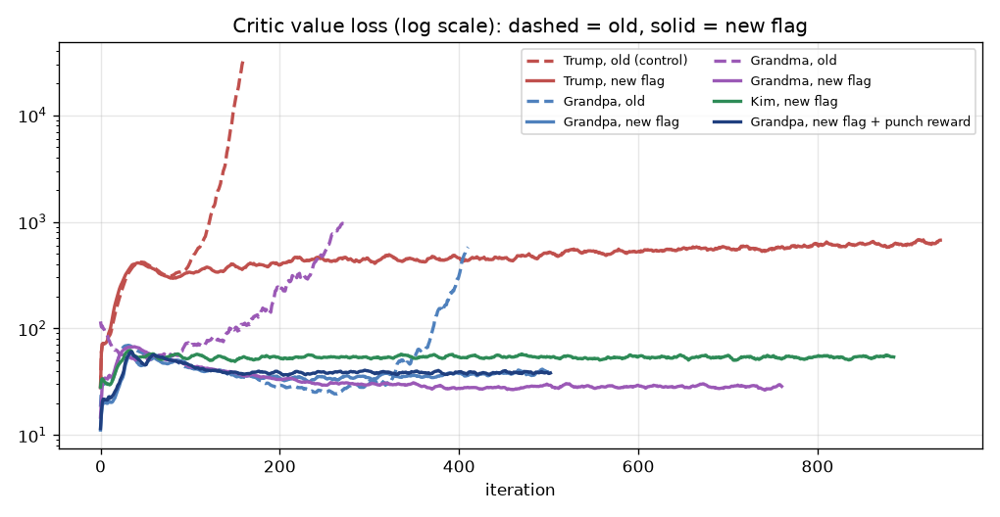
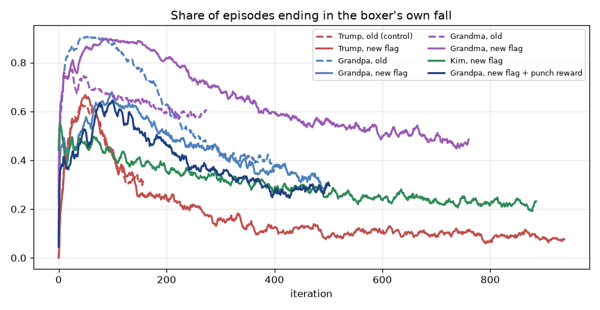
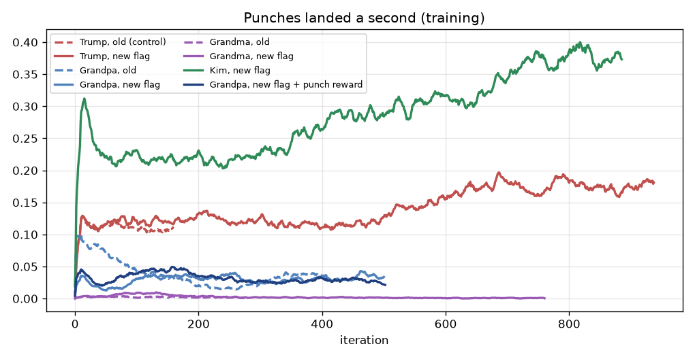

Summary: We found why every match run's critic blew up this week, and the fix works.
V(s_t) at time-outs and survivor cuts.--no-cut-bootstrap, it ran all 938 iterations.training/ppo.py has two opt-in options; the defaults are unchanged:
value_huber: a Huber critic loss. The logged value_loss stays plain MSE, so CSVs remain comparable.bootstrap_cuts: when False, time-outs and survivor cuts are valued as terminal.training/train_gauntlet.py:
--value-huber, --no-cut-bootstrap, --vloss-guard and --vloss-window.rew + γ·V(s_t) at a cut is self-referential. Any error in V feeds straight back into its own target. The ruined critics predicted values of −2,000 to −43,000 when real returns were about +200.envs/boxing.py to observe before it resets.| Run | Setting | Iterations | Critic | Footing (falls a minute) | Attack | Guard | Getting up | Carrying on | Verdict |
|---|---|---|---|---|---|---|---|---|---|
v3c3_trump | old (control) | 159 (guard stop) | 391 → 42,913 | 0.00 | 0.05/s | 50% | 28/30 | 24/28 | diverged |
v3c4_trump | same + flag | 938 (1.5 h) | 300–730 | 1.33 | 0.11/s at 2.0 m/s | 46% | 28/30 | 24/28 | critic fixed; boxer not better than shipped (0.00, 0.11/s, 63%, 27/29) |
v3m4_kim | flag | 886 (1.5 h) | 50–60 | 1.33 (shipped 3.33) | 0.35/s (0.44) | 61% (72%) | 30/30 | 24/30 (26/30) | kept on file: falls less, punches less |
v3m4_grandpa | old | 410 (guard stop) | diverged | 4.00 | 0.03/s | 64% | 30/30 | 25/30 | superseded |
v3m5_grandpa | flag | 501 (1 h) | 35–48 | 1.33 | 0.01/s | 69% | 29/30 | 24/29 | superseded by v3m6 |
v3m6_grandpa | flag, hit-w 3.0, seek-w 0.6 | 503 (1 h) | 35–47 | 0.00 PASS (baseline 2.7) | 0.01/s at 0.8 m/s | 66% | 30/30 | 26/30 | candidate |
v3m4_grandma | old | 274 (guard stop) | diverged | 6.67 | — | — | — | 8/27 | superseded |
v3m5_grandma | flag, fresh critic | 761 (1.5 h) | 24–31 | 0.00 PASS (baseline 11.3) | 0.00 | 29% | 27/30 | 10/27 | candidate |
Earlier in the evening, v3m2_grandma, v3m2_grandpa and v3m3_grandma are where the divergence was first measured. They are in rl_optimization_log.md.

Toddler: The dashed lines shoot up to the sky; that is the helper going wrong. The solid lines stay flat; the helper is fine now.
Child: Each boxer has a coach in its head that guesses how well things will go. The old way, the coach copied its own guesses whenever a practice round was stopped early, so its mistakes got bigger and bigger until they exploded (dashed lines). The new way, it treats a stopped round as finished, and its guesses stay calm for the whole night (solid lines).
Adult: The plot shows plain-MSE value loss on a log scale.
v3c3_trump grows geometrically to 4.3e4 by iteration 159. v3c4_trump is the identical command plus --no-cut-bootstrap, and stays at 300–730 for 938 iterations. Its slow drift tracks rising returns as its hit rate grew from 0.11 to 0.19 a second.rew + γ·V(s_t) is the source of the instability.
Toddler: Lines going down means falling down less. Down is good!
Child: This is how often a practice round ended with the boxer on the floor. With the calm coach, every boxer kept getting better for the whole night. The old runs (dashed) stopped early, before they could learn it. In the real test, both grandparents now stay on their feet for whole rounds.
Adult:
v3m5_grandma and v3m6_grandpa against all seven opponents.
Toddler: Grandma and Grandpa are not punching yet. Trump is punching a bit more.
Child: Staying up worked, but the grandparents almost never land a punch. Even when we gave Grandpa twice the prize for hitting, he still didn't, because you can't win a prize you never get to try for.
Adult:
--hit-w 3.0.checkpoints/v3m5_grandma/latest_grandma.pt: footing pass, no punches, weak after a get-up.checkpoints/v3m6_grandpa/latest_grandpa.pt: footing pass, getting up 30/30, carrying on 26/30, no punches.--no-cut-bootstrap the default for match runs. Later, replace it with a true next-state bootstrap in envs/boxing.py.